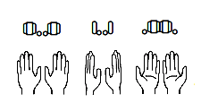
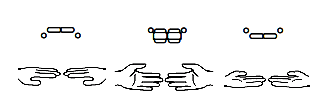

Orientation symobls combine a finger symbol and a thumb symbol to make a picture of the hand (from the signers perspective).


These orientation symobls are built using - = ' " . and `
`~1!2@3#4$5%6^7&8*9(0)-_=+
qQwWeErRtTyYuUiIoOpP[{]}\|
aAsSdDfFgGhHjJkKlL;:'"
zZxXcCvVbBnNmM,<.>/?
Type - = ' " . and ` to build orientation symbols:
Some signs can be written with or without orientation symbols.
Some signs are ambiguous without the orientation symbols.
Type in just the orientation symbols for these signs: